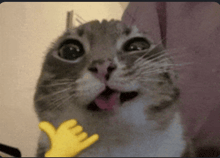

About Me
Learn more about the creator of this website and my connection to water conservation.

Hein Pyae Sone (Grady)
Home Country: Myanmar
Interests:
- Reading
- Watching anime
- Running
- Swimming
- Boxing
Introduction
Hi, so I'm Hein Pyae Sone or as you might know me Grady. And through this website I hope to bring more awareness towards the importance of water conservation and encourage people to develop sustainable habits.
Background
I was borning in myanmar and growing up, I learned the importance of valuing resources and understanding how everyday actions can affect the environment.
Personal Connection to Water Conservation
One of my personal experiences with water conservation was helping my father repair our household water pump. Through that experience, I gained a better understanding of how water systems work and how maintaining them properly can reduce unnecessary water waste in the home.
Reflection
While researching this topic, I realised that water conservation is not only the responsibility of governments and industries. Small actions taken by individuals can also make a meaningful difference. This project helped me become more aware of my own water usage and encouraged me to adopt better habits.